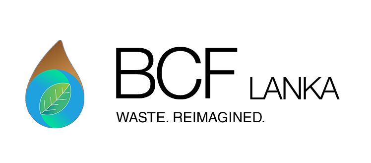
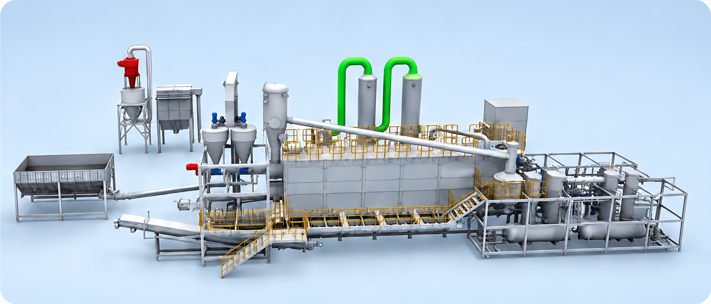
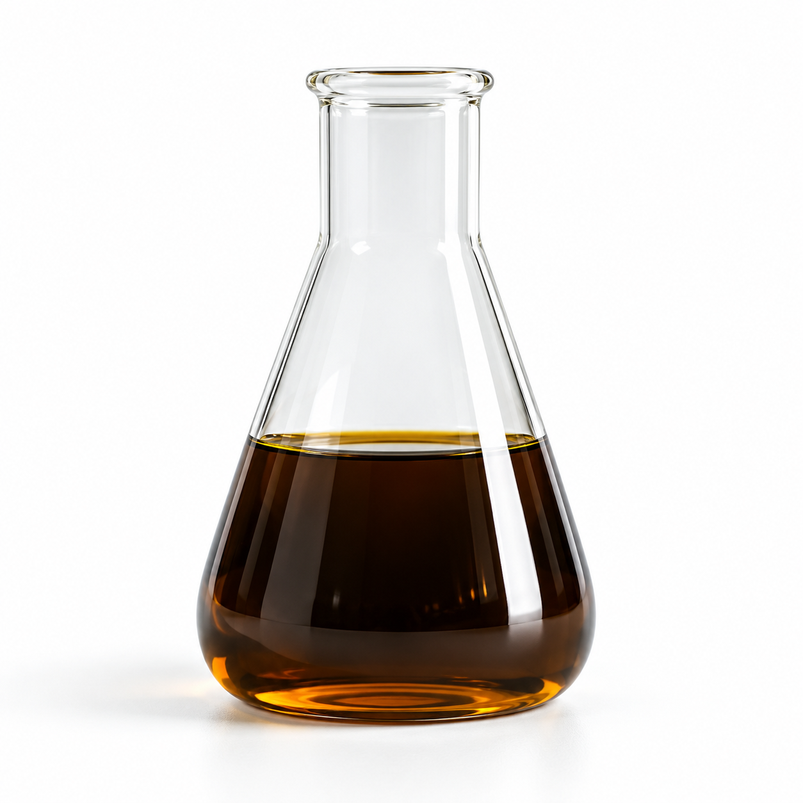
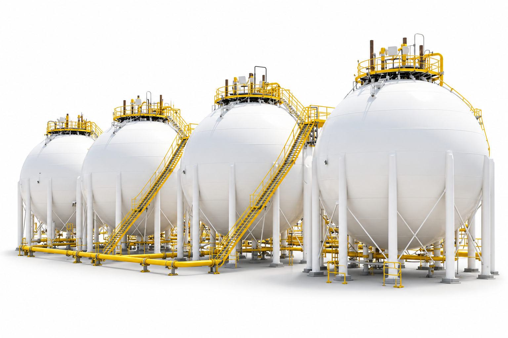
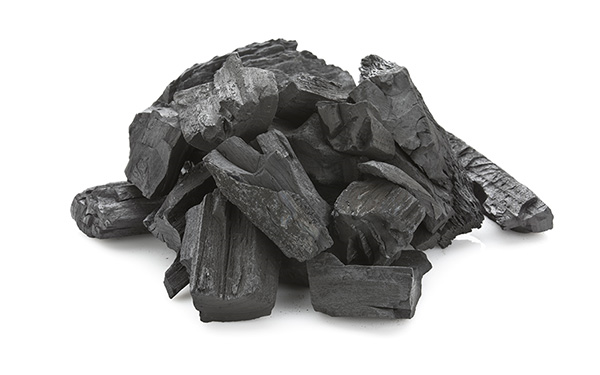

Recover
resources
Recovering suitable waste streams for useful fuels and materials.

Let’s talkTWO CITY CHALLENGES. ONE SHARED PURPOSE.
Our cause is to address waste pollution and the shortage of carbon-neutral energy. We give waste a productive purpose, aiming to create prosperity and well-being for people and our planet.
OUR CAUSE & CALLING
Cities around the world face two connected challenges: waste pollution and the need for carbon-neutral energy. Our purpose is to turn one problem into a solution for the other.
BCF LANKA recovers and repurposes suitable waste streams into useful fuels and materials. Our ambition is prosperity and well-being for humanity and our planet, supported by careful project design and measured environmental performance.
THE SCIENCE OF POSSIBILITY
Our approach begins with sorting and preparation in a Material Recovery Facility (MRF). Suitable feedstock then enters a separate pyrolysis process to recover oil, gas, and solid material.
See how it works →
EXPLORE THE PROCESS
Explore the five stages of a typical pyrolysis process. The exact plant configuration depends on feedstock and project requirements.
WHAT WASTE CAN BECOME
Output quality and volumes depend on feedstock composition and operating conditions. Each project starts with understanding both.
View all products →


ROOTED IN SRI LANKA
Our project development focus starts with Sri Lanka’s industrial waste streams and the energy needs of local industry.
A proposed pyrolysis project with an environmental recommendation dated September 2025, subject to specified conditions.
Explore our project focus →PROGRESS THROUGH PARTNERSHIP
We welcome conversations with waste generators, industrial fuel users, project partners, and prospective investors. A successful project starts with the right fit between feedstock, technology, and demand.
Find your partnership path →LET’S BUILD SOMETHING BETTER
Bring us your waste challenge, industrial fuel requirements,
or project opportunity.